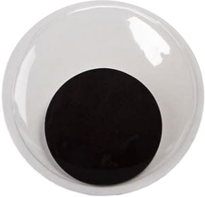
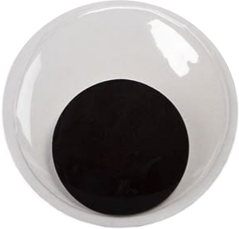
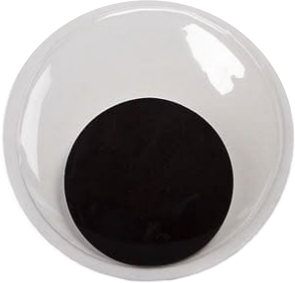
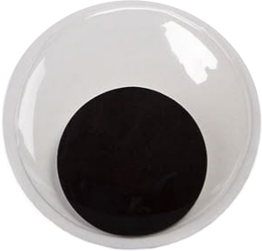

Apasionada por la animación y las artes, disfruto explorar la creatividad en diferentes formatos visuales. Participo activamente en voluntariados en refugios de animales, contribuyendo al bienestar de mascotas en situación de calle. Me motiva el trabajo en equipo, tanto en deportes como en proyectos colaborativos de publicidad y diseño. Además, tengo un gran interés por la repostería, experimentando con nuevas recetas y técnicas.